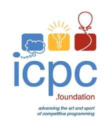

Learning Interests in B.Tech
Android App Development

Apps have always appealed to me because they are so easy to use. I first tried to
make an android app in tenth grade and I loved the experience. However, I had to
take a respite from app development to prepare for JEE. Now that I can get my hands
on Android Studios again, I hope to develop even better and more useful apps in the future.
Machine Learning

Machine learning is an application of artificial intelligence (AI) that provides systems
the ability to automatically learn and improve from experience without being
explicitly programmed. Machine learning focuses on the development of computer programs
that can access data and use it learn for themselves. If I learn to develop artificial
intelligence, I can use it to develop softwares that can greatly benefit the world.
Competitive Programming

I like to code in java, especially creating algorithms to solve problems. It challenges
me to think in different dimensions and tests my IQ. That is why I hope to join PAG IITR, and someday
represent my institute at the ICPC world finals.